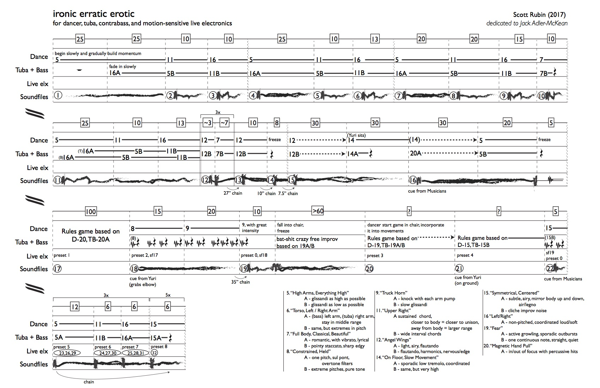

In this entry, I'm going to dive further into my process for composing ironic erratic erotic. This project is in collaboration with 3 Berlin-based performers: dancer Yuri Shimaoka, bassist Adam Goodwin, and tubist Jack Adler-McKean. In an earlier entry, I wrote a bit about this project, what I'm trying to accomplish, and my methods for doing it. As you might remember, I sent 20 audio samples of myself improvising on viola to Yuri. She sent 20 video samples of herself interpreting these samples to Jack and Adam, who then recorded themselves improvising to her movements. They recorded two takes for every one of Yuri's clips: the first amplified her body, and the second subverted it. These verbs (amplify, subvert) were meant to be interpreted loosely. My aim in using these verbs was to create an atmosphere of provocative behavior in which the musicians can create their own dynamic textures.
Let's walk through this with an example:
Here's viola sample #11:
It's basically longish sustained soft notes in the high register. There's not really a pulse, and the rhythm is irregular. Short notes are scattered among with longer ones, and my left hand is constantly sliding slowly up and down the fingerboard.
This was Yuri's response (mute the audio before listening):
[youtube https://www.youtube.com/watch?v=cZ2d0BOvV\_o?ecver=1&w=560&h=315\]
It's a simple behavior that focuses on the right side of her body. Her right arm mainly stays extended out sideways at around 90 degrees, and her left hand move along the right arm. The timing of her small-scale and larger-scale gestures seems similar to my treatment of long and short notes, and I think the attitude of her movement mimics the non-aggressive character of my improvisation.
Here is Jack and Adam's first interpretation. Keep in mind, they never heard my initial improvisation:
Here's their description of the music: sustained chord, if closer to body = closer to unison, if away from body = larger range. They chose to modulate the interval of the chord depending on Yuri's right hand movement. The irregular legato character of my initial improvisation seemed to transfer through Yuri's movement to the musicians' playing.
Here's the second:
Their description for this was: same sustained chords with extremely large intervals. I think that rather than subverting the character of Yuri's movement (i.e. play something more pointillistic or detached), they chose to place the previous sound in the extreme registers of their instruments. Adam pushes the bow through his lowest string on the bass while Jack takes the tuba into its highest range. Yuri's movements convey a sense of closeness. One arm follows the length of the other, and they are almost always together. The musicians subvert this closeness through the use of these extreme registers the music communicates an incredible daunting spaciousness.
This was one in 20 groupings of video and audio samples that will make up part of this work, and they cover a wide range of audible and spatial behaviors and interactions. The trick was then discovering the relationships between them and exploring them in ways that create a convincing architecture for the work's structure. I've copied a draft of the score below:

The boxed numbers indicate approximate duration in seconds. The dancer's behaviors are referenced under the durations, followed by the musicians' behaviors, then the motion-sensitive live electronics (haven't started those yet...), and finally the pre-made soundfiles (haven't started on those yet either...). Again -- it's a work in progress. It was important to make the musicians' parts first so they have as much time with the score as possible. The beauty (and curse) with electronics is that you can continue to edit them up until showtime. Hopefully though, it doesn't come to this...
The first system establishes a loop where the dancer repeats behaviors 5, 11, and 16. The musicians perform the same loop, but offset by one time-duration. Thus, the combinations are [5-16], [11-5], [16-11]. The goal in these loops is to communicate to the audience how the performance should be framed and experienced. Yuri's movements have analog relationships to the upcoming music, yet the sound that will accompany her in the present moment doesn't quite seem to fit until we reach the end of the first system when both dancer and musicians play behavior 7. While Yuri's analog relationship with the music is projected into the future, her digital relationship to the sound (through the use of motion sensors) affects the present.
The second system revisits the previous loop, but entrances are scattered. Then we encounter a short loop with behaviors 12 and 7, and then a long interpolation. Here, the performers start at behavior 12 and interpolate to behavior 14 in 30 seconds. The dancer continues doing 14 as the musicians pause. Then, the musicians come in playing behavior 20 (while the dancer is still on 14), and the they slowly interpolate to behavior 5. Divergent behavior interpolates to convergent behavior.
The third system introduces the improvisation game that Jack and I developed last summer in Darmstadt. I went over in an earlier entry, but I'll repost it here for reference:
In the written score, I've based these improvisations off the original material created by the performers. The movement/sound concepts will be based on different movements or musical ideas found in this material, and they will be worked out during our rehearsal sessions in Berlin. The goal for this system is to have a more fluid structure than the first 2 systems, which I view as being a bit rigid. I left the duration for these sections unknown because I have no idea what exactly the performers will do here, nor what kind of momentum they will bring to the situation. Thus, I will rely on them as to know when to move on.
The last system is a traditional recapitulation of the first, though with a few small changes. Basically, the form is A, A', B, A''.
See? Totally traditional! And under my word limit!